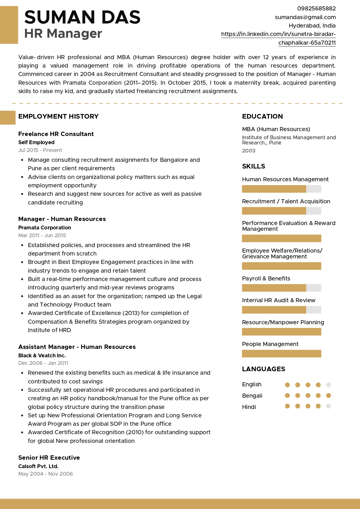
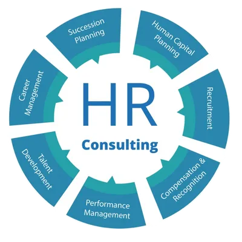

Our HR Services
Resume Writing
- Craft compelling resumes that highlight skills, experience, and achievements.
- Optimize resume content for applicant tracking systems (ATS) to increase visibility.
- 
Interview Preparation
- Conduct mock interviews to help candidates practice and improve their interview skills.
- Provide feedback and guidance on interview techniques and answering common questions.
Job Search Assistance
- Assist candidates in identifying suitable job opportunities based on their skills and interests.
- Offer guidance on networking, online job portals, and effective job search strategies.
Career Coaching
- Provide personalized career coaching sessions to help individuals set goals and create action plans.
- Offer guidance on career transitions, skill development, and professional growth.
HR Consulting
- Partner with businesses to develop HR strategies aligned with organizational goals.
- Provide guidance on recruitment, employee relations, performance management, and HR compliance.
- 
Diversity and Inclusion
- Develop and implement diversity and inclusion initiatives to foster a diverse and inclusive workplace culture.
- Offer training programs on unconscious bias, cultural awareness, and inclusive leadership.